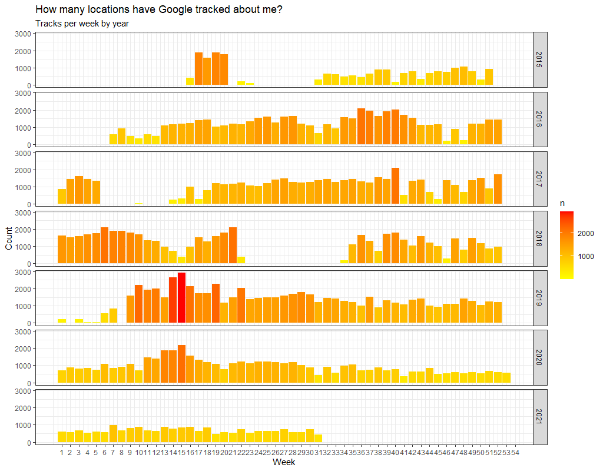
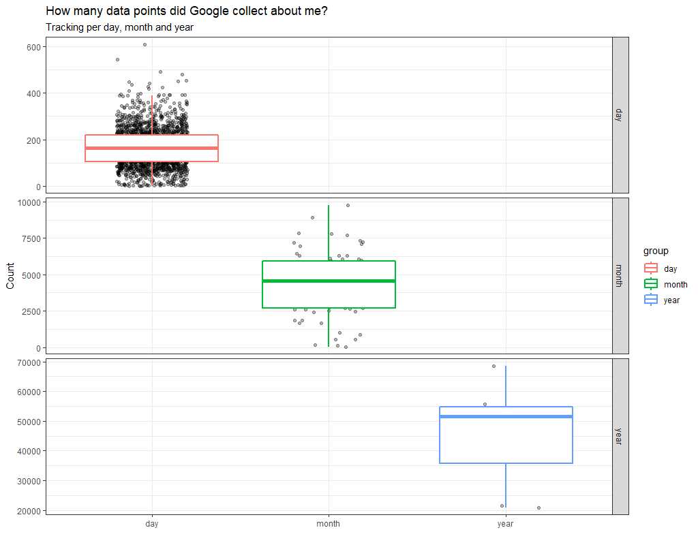
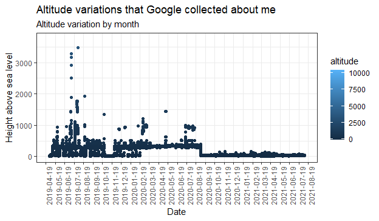
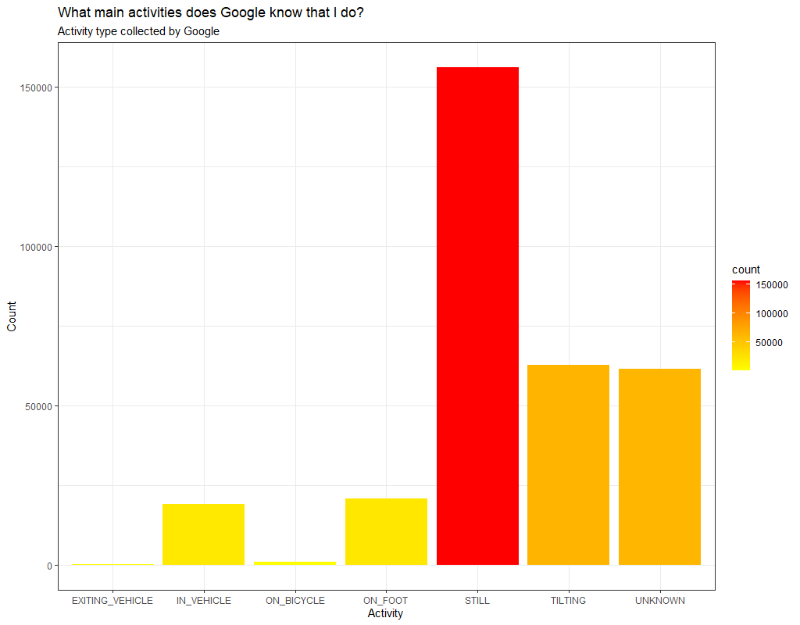
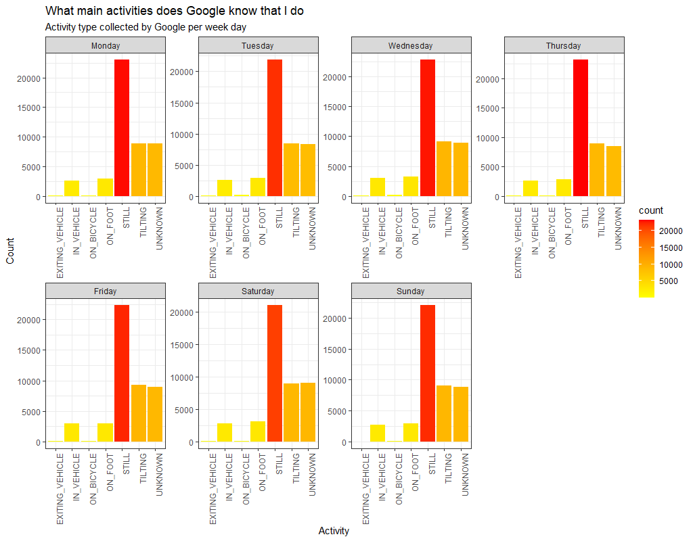

Google Maps Data Visualization
I have always been interested in the personal data that Google stores from its users. In particular, on this note, I will be addressing Google Maps data. I bought my first smartphone on 2015, and since that moment, Google has been tracking my location during several periods of time. My task in this work is to create visualizations using different tools in order to gain a deeper understanding on what is stored in Google's data center.
To start, I went to Google Takeout and I downloaded my location history. When I decompressed the file, I found a .json file called “Location History”. JSON (JavaScript Object Notation is an open-standard data format or interchange for semi-structured data. This format stores data in key-value pairs. In the file, I found the following keys: timestampMs, latitudeE7, longitudeE7, accuracy, activity, source, deviceTag, altitude, verticalAccuracy, platform, platformType, locationMetadata, velocity and heading.
In order to process all the data, I used R Studio. The library jsonlite allows to convert between JSON data and R objects. If you want to check the specifics of the code that I used and the pipelines to transform the information, visit the following repository: Google-Maps-Data-Analysis.
NA's in Dataframe
To gain a deeper understanding of the data, I started by analysing the NA's in the Dataframe. In datasets, NA can mean Not Available, Not Applicable or No Answer. In the case of the Google Maps data, the NAs represent data that is not available. To represent the NA's, I forked the Bubble-o-matic project of Mike Bostock on observablehq (Bubble-o-matic). The area of each circle is determined by the number of NA's. Out of the 14 variables, only 6 have NA's, therefore, the others were not represented. The total number of considered observations is 667294.
The graphic was done using SVG, id est, scalable vector graphics. SVG is a graphic bidimensional vectorial format that uses the XML syntax. SVG allows for three types of graphic objects: vector graphic shapes (e.g., paths consisting of straight lines and curves), images and text. Graphical objects can be grouped, styled, transformed and composited. The feature set includes nested transformations, clipping paths, alpha masks, filter effects and template objects.
Number of observations per year
Since 17/04/2015 to 06/08/2021, Google has collected a total of 321905 observations. The following visualization is a Tree Map that was created using Tableau. The Tree Map is useful to show the parts of a total by representing values with proportional areas. It can be observed that the year with the highest data collection was 2019, with 68593, and the lowest was 2021 with 20912. It is reasonable that 2015 and 2021 were the years where the lowest quantities of observations were recorded, since, in both cases, the collection was not done during the complete year.

Locations tracked per week by year
The following graph was created using R's ggplot2 library. The visualization portrays the number of observations per week during each year. In this graph, the time periods where I did not have the “Location” activated in my phone can be appreciated since in those time gaps there are no tracks. On the other hand, it can be observed that the count number varies considerably from week to week.
Locations tracked per week by year
The box plot is a graph that allows to represent data using the median and the quartiles. In this case, the whiskers are calculated adding or subtracting 1.5 times the interquartile range. Data points that exceed the whiskers are outliers. The spacings between the parts of the box indicate the degree of dispersion and skewness is the data.
It can be observed that the median data collection value per day is between 100 and 200. The spread of the data increases as I consider longer time frames. In the case of the year boxplot, a negative skew can be visualized.
Accuracy of the observations
How accurate are Google Maps observations? The accuracy variable let us know how close are we to the actual position of the device. Using Tableau, after processing the data in R Studio, I built a histogram to analyze this particular variable. I considered 100 m or less as high accuracy, 500 m or less as middle accuracy and over 500 m as low accuracy. The graph shows that most observations achieve a 100 m or less accuracy. I can state that Google Maps observations are, in general, quite accurate.

Altitude of the observations
Using R, I decided to analyze the altitude above sea level registered in the observations of the last two years. High values are compatible with plane flights and mountain trips. The loss of altitude that can be appreciated between August and September of 2020 is due to the fact that I moved to a different city.
Activities collected by Google Maps
The .json file that I downloaded possess activity information, so I decided to build a bar chart of all activities, to visualize which one is more predominant according to Google. By a big difference, according to this data, the device spends most of its time still. Tilting means that the device angle relative to gravity changed significantly, and this is the second most common activity.
When the activity data is represented per week day, the tendency does not change significatively. These charts make me thing that I should start biking more. I find quite interesting that one of the registered activities is exiting vehicle.

Leaflet Maps
Leaflet is a wonderful library for R. I will quote leafletjs.com:
"Leaflet is the leading open-source JavaScript library for mobile-friendly interactive maps. Weighing just about 39 KB of JS, it has all the mapping features most developers ever need. Leaflet is designed with simplicity, performance and usability in mind. It works efficiently across all major desktop and mobile platforms, can be extended with lots of plugins, has a beautiful, easy to use and well-documented API and a simple, readable source code that is a joy to contribute to".With leaflet I created two interactive maps. The first one represents movement trends and the second one is a heatmap. You can access both of them by clicking in the images below.